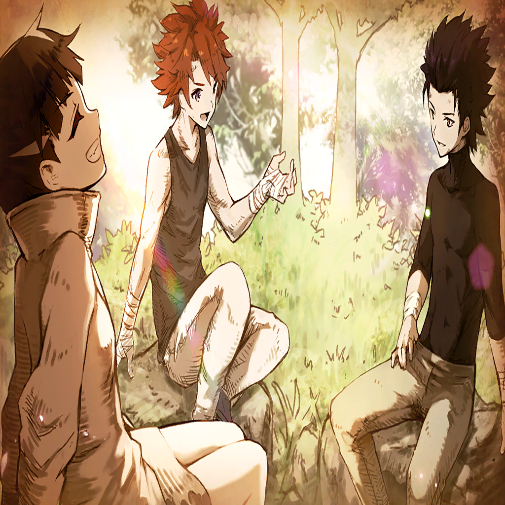

|
 |
| 盗賊団の親分 |
やるじゃねえか
…だが、さすがに疲れてきたみたいだな |

ジェラルド |
…!!
…くっ…!! |
| 盗賊団の親分 |
ここまでよくやったよ
なんの為にそこまで頑張ったのか
知らねえが… |
| 盗賊団の親分 |
お疲れさん |
|
| |
――なんの為に |
| |
――守りたいものを守る為
――あの日の誓いを果たす為 |
| |
――わかっているはずだ |
| |
――じゃあ、この靄（もや）は、なんだ |
| |
――なぜ今、お前の姿が浮かぶのだ |
| ？？？ |
ジェラルド!!! |
|

ナタリー |
っ…!!!! |
ジェラルド |
何してんだ…!? |
ナタリー |
…何…ボーッとしてる…のよ… |
ジェラルド |
…おい…お前…!! |
ジェラルド |
…え…？ |
ナタリー |
目を覚ましなさいよ
ほんっと、馬鹿なんだから |
ジェラルド |
…!? |
ナタリー |
どれだけアナタのこと見てきたと思ってるの
…アナタが気づいてなくても、アタシには
わかるんだからね |
ナタリー |
どうせ、
『ヴェテルならもっとうまくやる』とか
『ヴェテルは今頃先に進んでる』とか… |
ナタリー |
そんな下らないことばっか考えてるんでしょ
ほんっと下らない!! |
ナタリー |
それにね！
アナタの中にはヴェテルだけなの!?
アタシも入れて三人で誓ったんでしょ！ |
ナタリー |
ジェラルドの馬鹿…
でも…馬鹿なら馬鹿なりにさ… |
ナタリー |
すべてねじ伏せて、
『俺の選んだ道が一番正しい』くらい
証明してみなさいよ、馬鹿!! |
ジェラルド |
…………!!!! |
ナタリー |
う…
怒ったら、血出たわ… |
ナタリー |
…そんな馬鹿を支えるって…
…決めたアタシも…
馬鹿なんだけど…ね… |
ジェラルド |
おい…しっかりしろ…!! |
ナタリー |
アタシがいて、緋色の団の皆がいる
アナタはひとりじゃないんだよ |
ナタリー |
まだ…わからないって言うんなら…
解剖…しちゃうんだか…ら…ね… |
ジェラルド |
…え…？ |
ナタリー |
…来てくれた…よ…
………… |
ジェラルド |
おい!!!
しっかり…!!! |
| 盗賊団の親分 |
チッ…こいつら…!! |
| 緋色の団員 |
無事ですか、ナタリーさん！
ジェラルドの兄貴!! |
ジェラルド |
皆…どうして…!! |
| 緋色の団員 |
おふたりの姿がなかったから
もしやと思いまして
…間に合ってよかった |
ジェラルド |
…！ |
| 緋色の団員 |
…なんで何も言ってくれないんですか
いつもいつも無茶ばっかりして!!
もっと俺たちのことも頼ってくださいよ!! |
| 緋色の団員 |
そりゃ頼りないかもしれないですけど…
俺たちだって“緋色の団”の一員だ
ジェラルドの兄貴の力になりたいんです!! |
ジェラルド |
…!! |
| 緋色の団員 |
…お前ら、絶対負けるんじゃねえぞ!!
こんなところでうちの団長を
殺させやしねえ!! |
| 緋色の団員 |
“緋色の団”の底力、見せてやれ!! |
ジェラルド |
皆…!! |
ジェラルド |
………… |
|
ジェラルド |
比べている… |
| |
――教わったのでは、なかったか |
| ジェラルドの父 |
守りたいものを持つことは人を強くする |
| ジェラルドの父 |
俺の守りたいものはお前と…そして母さんだ
そういう軸があるからこそ、すべてを守る
鋼の如き意志を持てるというもの |
| ジェラルドの父 |
お前の守りたいものは、なんだ？ |
| |
――俺はあの時、なんと答えた |
|  |
ジェラルド |
今、ここに誓う…！ 如何なる理不尽にも、
折れることなき鋼の意志で
人々に笑顔をもたらさんことを…!! |
|
| |
――なんの為に、戦うのだ |
| |
――守りたいものを、守るのではなかったか |
| ジェラルドの父 |
守りたいものは、なんだ？ |
ジェラルド |
…何を、しているんだ俺は |
| |
――自ら積み上げた絆と仲間が見えないか |
| |
――自ら歩んで来た道を否定することは |
| |
――それらを否定することにならないか |
ジェラルド |
否定など、させない |
| |
――守りたいものは、なんだ |
ジェラルド |
…決まっている |
| |
――守りたいものを決めたら |
ジェラルド |
鋼の如き意志で守り抜く
…それが… |
ジェラルド |
父から教わった騎士道だ…!! |
|
| 盗賊団の親分 |
ふははははっ!!
最初の威勢はどうしたよ!! |
| 緋色の団員 |
…くそっ…!! |
ジェラルド |
………… |
| 緋色の団員 |
ジェラルドの兄貴!! |
| 盗賊団の親分 |
ふん…ひとり増えたくらいで何も変わらん！
かかれ!! |
| 盗賊団の親分 |
ハハハハハッ!!
串刺しになりやがったか!!
…!? |
ジェラルド |
…ウオオオオオオオオッ!!!! |
| 盗賊団の親分 |
こいつ…!? |
ジェラルド |
言わなかったか？
このほうが効率的だと |
| 緋色の団員 |
ジェラルドの兄貴!! |
ジェラルド |
安心しろ、この程度で俺は死なない |
ジェラルド |
…貴様たちの団長だからな |
| 緋色の団員 |
…!!
はい、ジェラルドの兄貴!! |
| 盗賊団の親分 |
くっ…!!
だが、この数相手には何もできまい!! |
ジェラルド |
…できるさ |
| 盗賊団の親分 |
…何？ |
ジェラルド |
俺は、忘れてしまっていた |
ジェラルド |
だが…思い出させてくれた者がいた |
|
|
ジェラルド |
そいつの為にも… |
ジェラルド |
これより、意志だけではない
信念だけではない |
ジェラルド |
この身も、心も、流れる血でさえも |
ジェラルド |
鋼と化し、その輝きを示す…!!! |